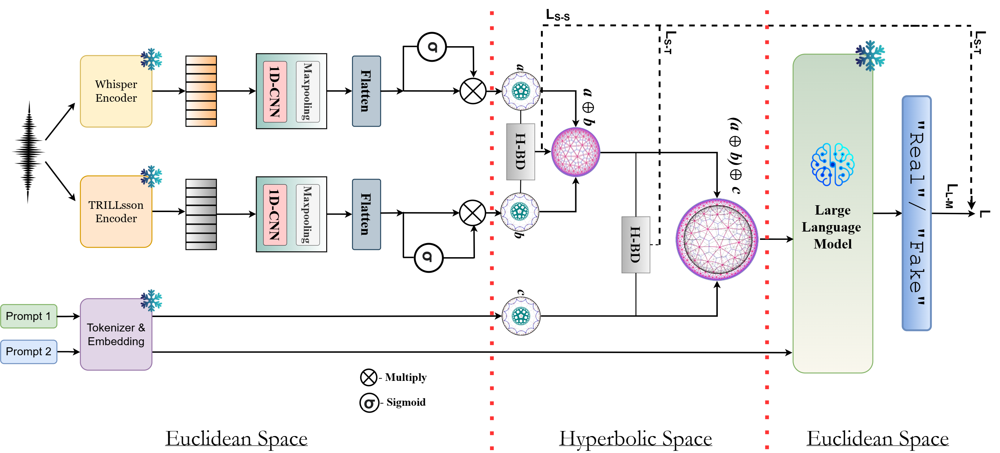

The rapid advancement of Audio Large Language Models (ALMs), driven by Neural Audio Codecs (NACs), has led to the emergence of highly realistic speech deepfakes, commonly referred to as CodecFakes (CFs). Consequently, CF detection has attracted increasing attention from the research community. However, existing studies predominantly focus on English or Chinese, leaving the vulnerability of Indic languages largely unexplored.
To bridge this gap, we introduce the Indic-CodecFake (ICF) dataset — the first large-scale benchmark comprising real and NAC-synthesized speech across multiple Indic languages, diverse speaker profiles, and multiple NAC types, built on the IndicSUPERB corpus. Our experiments demonstrate that state-of-the-art CF detectors trained on English-centric datasets fail to generalize to ICF, underscoring the challenges posed by phonetic diversity and prosodic variability in Indic speech. We further present a systematic zero-shot evaluation of SOTA ALMs on ICF, revealing consistently poor performance.
To address these limitations, we propose SATYAM, a novel hyperbolic ALM tailored for CF detection in Indic languages. SATYAM integrates semantic representations from Whisper and prosodic representations from TRILLsson via Bhattacharya distance in hyperbolic space, followed by the same alignment between the fused speech representation and an input conditioning prompt. This dual-stage framework enables effective modeling of hierarchical relationships both within speech (semantic–prosodic) and across modalities (speech–text). Extensive evaluations show that SATYAM consistently outperforms competitive end-to-end and ALM-based baselines on the ICF benchmark.
ICF is constructed by resynthesizing real speech from IndicSUPERB using 8 NAC families in a controlled encode–decode pipeline. Each real utterance x is passed through a NAC encoder E and decoder D to yield a CodecFake counterpart x̃ = D(E(x)), preserving linguistic content while introducing NAC-specific artifacts. The dataset spans 12 Indic languages across both Indo-European and Dravidian families. All codec models used to generate ICF are set up and available at CodeVault-girish/Neural-Codecs .
IE = Indo-European · DR = Dravidian
Neural Audio Codecs Used
Descript Audio Codec with multi-scale architecture.
SeenMeta's streaming neural audio codec.
SeenMulti-scale neural audio codec.
SeenGoogle's end-to-end neural audio codec.
SeenHierarchical speech tokenizer for LLMs.
SeenFundamental frequency-aware codec.
UnseenHigh-fidelity streaming audio decoder.
UnseenMoshi's neural audio codec (Kyutai).
UnseenSEEN NACs appear in training (test-known split) · UNSEEN NACs held out for cross-codec generalization (test-unknown split)

SATYAM is a supervised hyperbolic ALM that formulates CF detection as a conditional generation task. Given an input speech utterance, SATYAM extracts complementary semantic and paralinguistic representations, fuses them in hyperbolic space via Bhattacharya distance alignment, and conditions a frozen LLM decoder to generate a one-word verdict: "Real" or "Fake". Total trainable parameters: ~3.75M.
Two complementary encoders extract representations from the input speech waveform: Whisper provides semantic representations (ew) capturing linguistic content, while TRILLsson provides paralinguistic representations (et) capturing prosodic and acoustic cues. Each branch passes through a 1D-CNN block (filter size 3) and max-pooling, then projects into a shared Euclidean space of dimension d. A sigmoid gating module filters salient information before the hyperbolic mapping stage.
Both representations are mapped into a d-dimensional hyperbolic space Hdc (curvature −c) via the exponential map at the origin:
Yielding hyperbolic representations hw and ht on the Poincaré manifold.
We minimize the Bhattacharya distance (BD) between the semantic and paralinguistic hyperbolic distributions to align them. For distributions P and Q on Hdc:
This yields the speech–speech alignment loss LS-S = DB(hw, ht). The aligned representations are then fused using Möbius addition (⊕c), which preserves hyperbolic geometry: hf = hw ⊕c ht.
A conditioning prompt "Analyze the speech for unnatural artifacts" is fed to Qwen2-7B. Hidden states from an intermediate transformer layer are mean-pooled to obtain a prompt representation eA, projected to the shared space, then mapped to hyperbolic space. The same BD alignment is applied between the fused speech and prompt: LS-T = DB(hf, hA). Final aggregation: hfinal = hf ⊕c hA.
The aggregated hyperbolic representation is mapped back to Euclidean space via the logarithmic map, linearly projected to g, and injected as prefix conditioning tokens into the frozen Qwen2-7B decoder. A decision prompt "Determine whether the speech is real or fake. Answer only in one word: 'Real' or 'Fake'" drives generation of the output sequence Y. Training minimizes:
OpenAI's speech recognition model; captures linguistic and semantic content from speech.
Google's paralinguistic model; captures prosodic and acoustic non-semantic cues — key for deepfake detection.
Hyperbolic space with curvature −c. Naturally embeds the hierarchical structure of speech semantics and artifacts.
Extended to hyperbolic space for speech–speech and speech–prompt distribution alignment. Novel contribution.
Geometry-preserving operation in hyperbolic space. Fuses semantic + prosodic, and speech + prompt representations.
Prefix-conditioned generation with ~3.75M trainable parameters. Lightweight variant with Qwen2-1.8B also evaluated.
Table 1: In-domain Training and Evaluation on ICF and CodecFake
SATYAM achieves 98.32% ACC / 3.27% EER on ICF and 99.11% ACC / 1.94% EER on CodecFake, outperforming all end-to-end and ALM-based baselines by substantial margins. W = Whisper, T = TRILLsson. Green = best, yellow = second best.
| Method | ICF | CodecFake | ||
|---|---|---|---|---|
| ACC ↑ | EER ↓ | ACC ↑ | EER ↓ | |
| Zero-shot ALM Evaluation | ||||
| Pengi | 3.19 | 98.26 | 5.68 | 94.97 |
| Audio Flamingo 2 | 5.42 | 97.68 | 8.41 | 92.10 |
| Audio Flamingo 3 | 6.98 | 97.21 | 10.22 | 90.85 |
| Qwen-audio-chat | 10.63 | 89.71 | 13.00 | 86.61 |
| Qwen-audio-base | 11.17 | 89.23 | 15.82 | 85.74 |
| Qwen2-audio-chat | 12.05 | 88.95 | 16.74 | 82.33 |
| Qwen2-audio-base | 13.41 | 88.57 | 17.91 | 81.26 |
| End-to-End & Pre-Trained Backbone | ||||
| AASIST | 90.60 | 12.47 | 94.21 | 10.13 |
| Whisper-LCNN | 91.98 | 11.89 | 93.38 | 7.92 |
| Wav2vec2-AASIST | 92.50 | 9.62 | 94.45 | 7.29 |
| MiO | 92.80 | 9.04 | 95.11 | 6.49 |
| SATYAM Ablations (Ours) | ||||
| W + Qwen2-7B | 92.98 | 8.61 | 94.64 | 6.02 |
| T + Qwen2-7B | 93.21 | 8.09 | 95.10 | 5.83 |
| W + T + Qwen2-7B (Concat) | 93.28 | 7.94 | 95.75 | 4.39 |
| W + T + Qwen2-7B (Möbius) | 94.01 | 7.02 | 95.31 | 4.07 |
| W + T + Qwen2-7B (E-BD) | 94.93 | 5.39 | 96.47 | 3.68 |
| W + T + Qwen2-7B (H-BD-ST only) | 95.78 | 5.14 | 97.22 | 2.69 |
| W + T + Qwen2-7B (H-BD-SS only) | 96.11 | 5.02 | 97.34 | 2.42 |
| SATYAM with Qwen2-1.8B | 97.14 | 4.53 | 98.32 | 2.11 |
| SATYAM (Qwen2-7B) | 98.32 | 3.27 | 99.11 | 1.94 |
Scores in %. Bold green = best · Yellow = second best. Ablations confirm that both H-BD-SS and H-BD-ST stages are complementary — removing either hurts performance.
Table 2: Generalization — Cross-Benchmark Transfer
SATYAM remains robust under cross-benchmark distribution shift. AASIST degrades severely when transferred to ICF, while SATYAM maintains low EER in both transfer directions.
| Transfer Setting | AASIST EER ↓ | SATYAM EER ↓ |
|---|---|---|
| CodecFake → ICF (zero-shot) | 40.32 | 7.43 |
| ICF → CodecFake | 29.81 | 3.79 |
| Cross-lingual (random 6-lang train → held-out lang) | 26.74 / 31.11 | 6.34 / 7.09 |
| Dravidian → Indo-European | 33.45 | 7.78 |
| Indo-European → Dravidian | 38.73 | 8.48 |
| Unseen codecs — clean (test-unknown) | 14.38 | 5.23 |
| Unseen codecs — noisy (test-unknown) | 16.29 | 7.41 |
EER in %. SATYAM generalizes across codec families, language families, and acoustic conditions — demonstrating robustness far beyond English-centric baselines.
Ground truth (GT) samples are randomly drawn from the IndicSUPERB corpus. Each row shows a real utterance alongside its NAC-resynthesized CodecFake counterpart for a given language.
| Language | Codec | GT Speech | Generated (Fake) Speech |
|---|---|---|---|
| Loading… | |||
If you find this work useful, please cite: